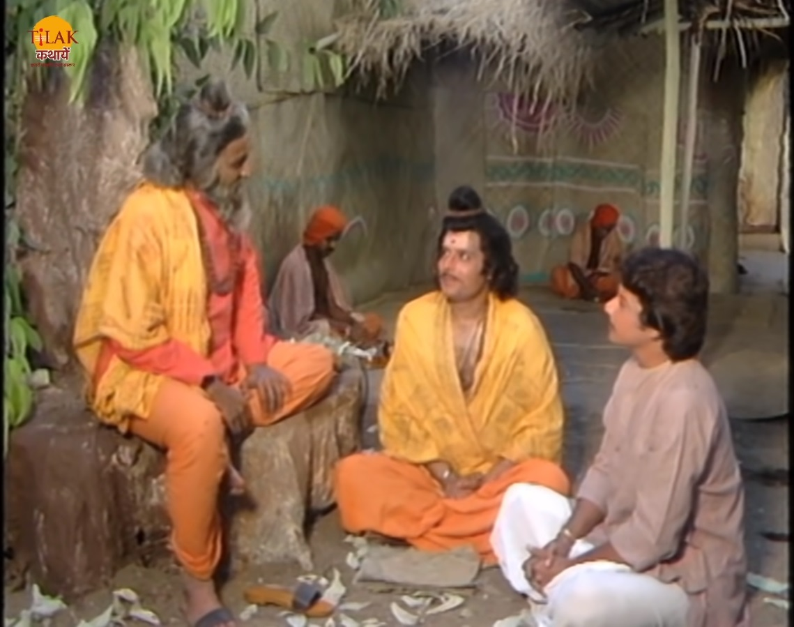

रामानंद सागर कृत विक्रम और बेताल भाग 14 - मधुमालती का कौन बनेगा पति
बेताल को विक्रम पकड़ लेता हिया और उसे कंधे पर डाल आकर साधु के पास ले जान ए के लिए निकल पड़ता है। बेताल विक्रम को फिर से कहानी सुनाता है। यमुना नदी के किनारे के नगर था जिसमें केशाव नाम का एक पुजारी उस नगर के मंदिर का ध्यान रखता था। पुजारी को एक हरिदत्त नाम का एक युवक मिलता है जो उस नगर में नया आया था और एक व्यापारी के यहाँ काम करता था। पुजारी की एक मधुमालती नाम की बेटी वो अपने पिता को घर के लिए बुलाने आती है तो हरी डट उसे देख कर मोहित हो जाता है और पुजारी से उनकी बेटी का हाथ माँग लेता है। पुजारी हरिदत्त को पसंद कर लेता है और उसे वादा कर देते है की उसकी शादी उसकी बेटी से होगी। दूसरी ओर पुजारी के घर वामन नाम का लड़का और उसके माता पिता मधुमालती से शादी की बात करने आते हैं जिसे पुजारी की पत्नी पसंद कर लेती है और शादी के लिए झान बोल देती है। वहीं मधुमालती का भाई भी अपने ब्राह्मण मित्र मधुसूदन को भी अपनी बहन से शादी के लिए हां कर आता हैं क्यों की मधुसूदन भी मधुमालती से प्रेम करता था। अब तीनों घर आकर सब कुछ बताते हैं तो उनमे बहस हो जाती है की अब मधुमालती की शादी किस से होगी।

तीनों युवक मधुमालती के साथ अपना जीवन कैसा होगा यह सोचने लगते हैं। एक दिन मधुमालती बगीचे में घूम रही थी की तभी उसे एक साँप काट लेता है। पुजारी उसे बचाने के लिए सपेरों बुलाता है लेकिन वो सँपेरे उसे कहते हैं की इस तिथि में जिसे साँप काट लेता है उसे कोई भी नहीं बचा सकता। मधुमालती की मृत्यु हो जाती है और उसके संस्कार पर तीनों युवक भी आते हैं। वो तीनों युवक मधुमालती के संस्कार के बाद उसकी चिता की राख से अस्थियाँ उठाते हैं तो मधुसदन कहता है की अब वो वैराग्य का जीवन बिताएगा क्योंकि उसके जीवन में सिर्फ़ मधुमालती थी। वामन भी मधुमालती की अस्थियों को अपने साथ लेकर वन वन भटकने का निर्णय लेता है और हरीदत्त मधुमालती के संस्कार की जगह पर उसकी राख को संजो कर रखने के लिए एक कुटिया बना कर सदा के लिए वहीं रहने का निनर्य ले लेता है।
एक दिन मधुसूदन एक नगर में जाता है तो उसे वहाँ का ब्राह्मण भोजन कराता है और रात में उनके वहीं रुकने के लिए कहता है मधुसूदन उनकी बात मान लेता है। उस ब्राह्मण की एक बेटी थी और वह उस दिन अपने पति के आने का इंतज़ार कर रही थी की तभी उसके पति मरने की अवस्था में वहाँ आता है और अपनी पत्नी के पास आते ही अपने प्रन त्याग देता है। वह ब्राह्मण अपनी बेटी को रोते हुए देख कर भावुक हो जाता है तो मधुसूदन उन्हें सांत्वना देता है। ब्राह्मण अपने बेटी के सुहाग को पुनः जीवित करने की बात मधुसूदन को बताता है की वो संजीवनी विद्या जनता है और उसके होते उसकी बेटी के पति को कुछ नहीं होगा। ब्राह्मण अपन संजीवनी विधि की पुस्तक लता है और विधि शुरू करता है मधुसूदन यह सब देख रह था।
ब्राह्मण अपनी बेटी के सुहाग को जीवित कर देता है। मधुसूदन रात में ब्राह्मण की संजीवनी विधि की पुस्तक को उठा कर लेकर वही आ जाता है जहां मधुमालती का संकार किया था उस स्थान पर हरी दत्त ने कुटिया बनायी हुई थी घूमता भटकता वामन भी वहाँ आ जाता है। मधुसूदन उन्हें विधि की बात बताता है। मधुसूदन मधुमालती की अस्थियों पर विधि को इस्तेमाल करता है। उस रख से मधुमालती पुनः लौट आती है। मधुमालती के वापस आ जाने पर तीनों युवकों में इस बात को लेकर विवाद हो जाता है की अब मधुमालती किसके साथ विवाह करेगी। अब बेताल विक्रम से प्रश्न पूछता है की वो बताए की मधुमालती का इन तीनों युवकों में से कौन उसका पति बनाने योग्य है। राजा विक्रम बताता है की मधुमालती का विवाह हरी दत्त से होना चाहिए क्योंकि मधुसूदन ने उसे जीवन दान दिया जो की एक पिता का कर्तव्य है और वामन ने उसकी अस्थियों को सम्भाल कर रखा जो की एक पुत्र का कर्तव्य होता है। इसलिए वो दोनों पति नहीं बं सकते लेकिन हरिदत्त जो रख समेत मधुमालती के लिए कुटिया बनाकर रहा इसलिए वही उसका पति बनेगा।